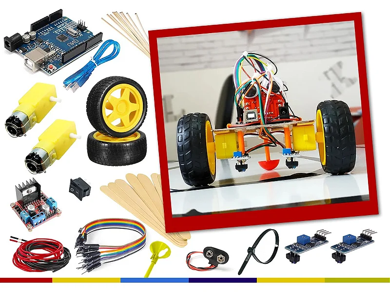

Robô Seguidor de Linha
Nosso projeto nasceu como um desafio acadêmico: projetar e construir um robô seguidor de linha compacto e confiável, capaz de competir em pistas reais. Em um processo intenso de design, montagem e testes, a equipe enfrentou problemas de sensoriamento, calibragem e controle e os resolveu com soluções práticas e código limpo.
O robô foi desenvolvido ao longo de 8 semanas, período em que passamos por fases de prototipagem, integração eletrônica e otimização do algoritmo de controle (correção de trajetória e ajustes de PWM). O resultado é um robô autônomo que combina robustez mecânica e lógica embarcada eficiente.
- Plataforma: Arduino Uno R3 (ATmega328P)
- Sensores: 4x módulos seguidor de linha IR + HC-SR04
- Atuação: 2x motores DC (Ponte H L298N)
